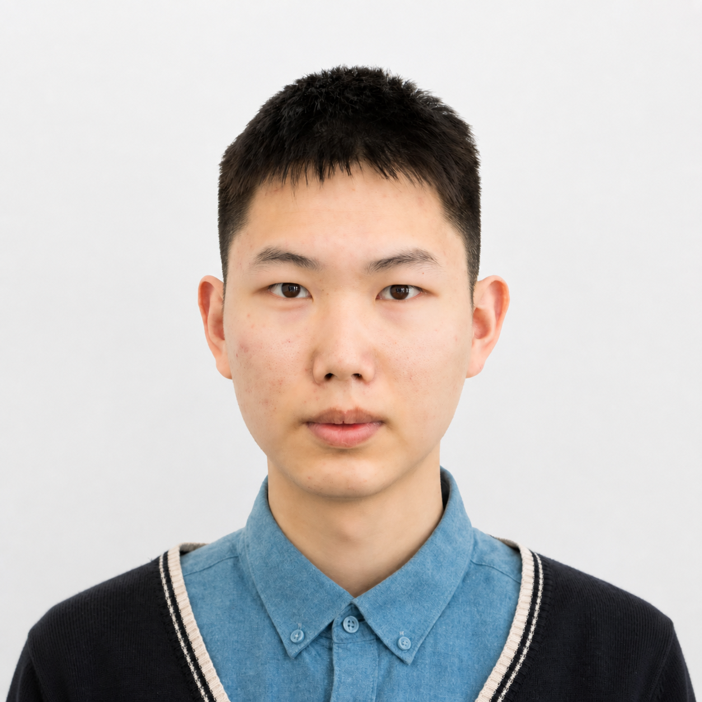

Master’s Student in Biology and Medicine · Dalian Institute of Chemical Physics, Chinese Academy of Sciences
2026–Present
Yixiang Luo
Computational Systems Biology · AI Virtual Cells · Genome-Scale Models
vivarock233@gmail.com · vivarock233-byte.github.io
Dalian, China · 15581332700

Computational systems biology researcher experienced in strain-specific GEM reconstruction, reference-guided gap filling, FBA/pFBA, comparative genomics, and phenotype analysis. Interested in hybrid mechanistic–AI virtual cells and evidence-aware agents for metabolic-model curation.
Education
B.Eng. · Dalian University of Technology
2022–2026
Exchange Student · National Yang Ming Chiao Tung University
2023
Honors & Awards
- Outstanding Graduate, Dalian University of Technology, 2026
- University Outstanding Student Honor, Dalian University of Technology, 2022–2023
- Science and Technology Innovation Scholarship, 2022–2023 and 2024–2025
- Sunshine Education Scholarship, Social Practice Scholarship, and Scholarship for Civic and Ethical Excellence, 2022–2023
Selected Research Projects
Agent-based GEM Correction
Ongoing
- Designing an evidence-aware workflow to identify candidate GEM errors and propose auditable corrections.
- Evaluation focuses on biochemical evidence, model behavior, and phenotype consistency rather than objective improvement alone.
Comparative GEM Reconstruction and Phenotype Analysis of Methylotrophic Yeasts
Undergraduate Thesis
- Reconstructed draft, strain-specific GEMs for 16 representative methylotrophic yeasts using AlphaGEM and COBRApy; performed reference-guided gap filling for methanol growth.
- Combined FBA/pFBA with OrthoFinder-based orthology, gene-copy-number analysis, and methanol-utilization and tolerance phenotypes to study strain-level diversity.
Technical Skills
Computational biology: Genome-scale metabolic modeling, comparative genomics, phylogenomics, and genotype–phenotype analysis
Quantitative methods: Constraint-based modeling, FBA/pFBA, gap filling, GPR analysis, growth-curve modeling, and statistical analysis
Programming: Python, C++, MATLAB, and Git; reproducible research workflows, testing, debugging, and automation
Research Interests
Hybrid mechanistic–AI virtual cells
Multimodal cell-state and perturbation modeling
Genome-scale metabolic modeling
Agent-based GEM correction